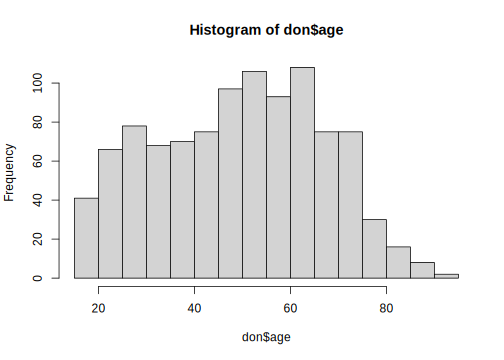
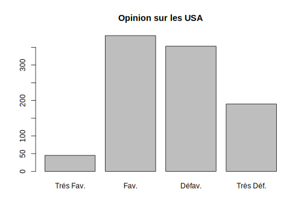
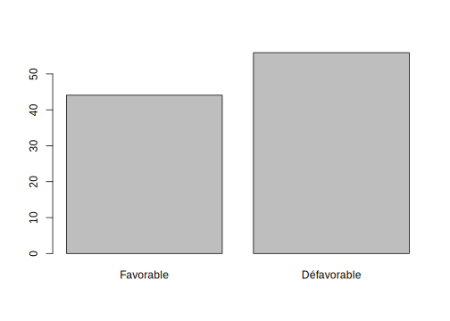
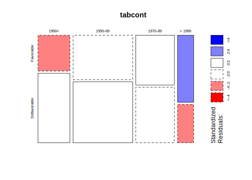
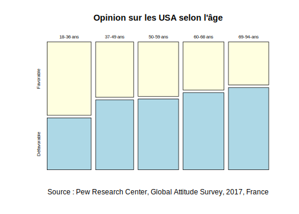
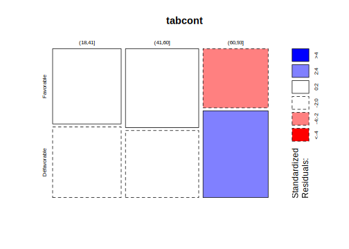
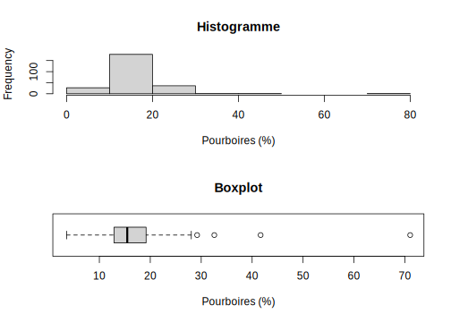

Partie 7 Graphiques avec R-Base

- Mise en place : Télécharger le dossier exo8 et décompressez le sur votre ordinateur. Puis ouvrez le projet R
exo8.Rprojdans Rstudio.
7.1 Introduction
7.1.1 Pourquoi s’em…bêter à utiliser les fonctions primitives de R pour faire des graphiques ?
On peut se demander si cela vaut la peine d’utiliser R-base pour faire des graphiques. En effet R propose maintenant des packages produisant facilement de très jolis graphiques statiques (ggplot2) ou dynamiques (plotly). La réponse est cependant oui car :
- il faut pouvoir relire et améliorer des programmes anciens
- les primitives graphiques de R permettent de créer ses propres applications
- les packages ggplot2 et plotly reprennent des concepts de R-base
Et la plus raison la plus importante :
- c’est l’occasion d’apprendre à créer ses propres fonctions et ainsi de meiiux apprécier les qualités et les défauts de celles que l’on trouve dans les packages qu’on utilise.
7.1.2 Trois étapes pour créer un graphique
Comme indiqué par Sophie Baillargeon dans son excellent cours de R de l’Université de Laval (Québec) , un programme pour créer un graphique avec le système graphique de base en R se décompose typiquement en 3 étapes utilisant des fonctions différentes :
- Etape 1 : La configuration des paramètres graphiques généraux (facultatif) :
- Etape 2 : L’initialisation d’un graphique (obligatoire) :
- Etape 3. L’ajout séquentiel d’éléments au graphique (facultatif) :
7.2 Préparation des données
7.2.1 Chargement du fichier
On charge un fichier statistique appelé tips.csv où les séparateurs sont des points-virgules et les décimales des points.
don<-read.table(file = "resources/data/tips/tips.csv",
sep = ";",
header = T)
head(don)
#> IDEN TOTBILL TIP SEX SMOKER DAY TIME SIZE
#> 1 R001 16.99 1.01 1 0 6 1 2
#> 2 R002 10.34 1.66 0 0 6 1 3
#> 3 R003 21.01 3.50 0 0 6 1 3
#> 4 R004 23.68 3.31 0 0 6 1 2
#> 5 R005 24.59 3.61 1 0 6 1 4
#> 6 R006 25.29 4.71 0 0 6 1 47.2.2 Contenu du fichier
Ce dossier contient les pourboires (tips en anglais, d’où le nom du fichier) d’un serveur dans un restaurant américain aux débuts des années 1990. Le restaurant était dans un centre commercial. Il y avait une zone fumeurs et une zone non fumeurs.Les données indiquent le prix du repas, le pourboire, le sexe de la personne qui a payé et donné le pourboire, si c’était dans la zone fumeurs ou non, le jour où le repas a été pris, si c’était en journée ou en soirée et enfin, le nombre de convives.
Sources : Ces données sont disponibles dans le package R nommé rggobi et sont décrites dans l’ouvrage de Cook et Swayne intitulé Interactive and Dynamic Graphics for Data Analysis. Elles font partie des données d’exemple du livre de Bryant et Smith dont la première édition est parue en 1995 dont le titre est Practical Data Analysis: Case Studies in Business Statistics.
7.2.3 Dictionaire des variables
- IDEN : identifiant du repas
- TOTBILL : prix du repas (en dollars des années 1990)
- TIP : pourboire (en dollars des années 1990)
- SEX : sexe de la personne qui a payé (0 = Homme, 1 = Femme)
- SMOKER : la personne qui a payé est non-fumeur (O) ou fumeur (1)
- DAY : jour de la semaine (1 = dimanche, 2 = lundi, 3 = mardi, …)
- TIME : repas pris en journée (0) ou le soir (1)
- SIZE : nombre de convives
7.2.4 Recodage des variables
Le type de plusieurs variables est incorrect. On transforme les codes numériques en facteur et on recode les niveaux en français :
don$IDEN<-as.character(don$IDEN)
don$SEX<-as.factor(don$SEX)
levels(don$SEX)<-c("Homme","Femme")
don$SMOKER<-as.factor(don$SMOKER)
levels(don$SMOKER)<-c("Non fumeur", "Fumeur")
don$DAY<-as.factor(don$DAY)
levels(don$DAY)<-c("Mercredi","Jeudi","Vendredi","Samedi")
don$TIME<-as.factor(don$TIME)
levels(don$TIME)<-c("Journée","Soirée")7.2.5 Ajout d’une nouvelle variable
On crée la variable PCT qui est le rapport entre le pourboire (TIP) et le prix total (TOTBILL) du repas exprimé en pourcentage.
don$PCT<-100*don$TIP/don$TOTBILL7.2.6 Résumé de l’ensemble du tableau
summary(don)
#> IDEN TOTBILL TIP SEX
#> Length:244 Min. : 3.07 Min. : 1.000 Homme:157
#> Class :character 1st Qu.:13.35 1st Qu.: 2.000 Femme: 87
#> Mode :character Median :17.80 Median : 2.900
#> Mean :19.79 Mean : 2.998
#> 3rd Qu.:24.13 3rd Qu.: 3.562
#> Max. :50.81 Max. :10.000
#> SMOKER DAY TIME SIZE PCT
#> Non fumeur:151 Mercredi:62 Journée: 68 Min. :1.00 Min. : 3.564
#> Fumeur : 93 Jeudi :19 Soirée :176 1st Qu.:2.00 1st Qu.:12.913
#> Vendredi:87 Median :2.00 Median :15.477
#> Samedi :76 Mean :2.57 Mean :16.080
#> 3rd Qu.:3.00 3rd Qu.:19.148
#> Max. :6.00 Max. :71.034##.Paramètres généraux et disposition des graphiques
7.2.7 La fonction par()
La fonction par() ne produit pas directement de graphique mais permet de :
- définir la disposition de plusieurs graphiques
- spécifier la largeur des marges
- définir des paramètres généraux valables pour tous les graphiques
Elle se comporte donc comme une feuille de style ou un CSS. Il est de ce fait prudent de stocker les paramètres d’origine avant de les modifier.
Il y a 66 paramètres différents … Il est prudent de les stocker dans leur configuration d’origine avant de les modifier.
# Stockage des paramètres d'origine
old<- par()
# Affichage des paramètres d'origine
head(old)
#> $xlog
#> [1] FALSE
#>
#> $ylog
#> [1] FALSE
#>
#> $adj
#> [1] 0.5
#>
#> $ann
#> [1] TRUE
#>
#> $ask
#> [1] FALSE
#>
#> $bg
#> [1] "transparent"7.2.8 fonction par() + mfrow
Supposons que l’on veuille disposer verticalement une boxplot et un histogramme de la variable PCT. On va utiliser l’instruction mfrow=c(2,1) pour placerles deux figures suivantes sur des lignes séparées :
par(mfrow=c(2,1))
hist(don$PCT, main="Histogramme", xlab="Pourboires (%)")
boxplot(don$PCT, horizontal=T, main="Boxplot", xlab = "Pourboires (%)")
Si l’on préfère une disposition horizontale on modifie le paramètre mfrow :
par(mfrow=c(1,2))
hist(don$PCT, main="Histogramme", xlab="Pourboires (%)")
boxplot(don$PCT, horizontal=T, main="Boxplot", xlab = "Pourboires (%)")
7.2.9 Autres paramètres de par()
On peut ajouter toute une série d’autres paramètres par défaut. Par exemple, pour faire un graphique sur fonds noir (bg) à traits blancs (fg), puis régler la taille (cex) et la couleur (col) des différents textes.
par(mfrow = c(1,2),
bg="black", fg="white",
cex.main = 1, col.main = "gray80",
cex.lab = 0.8, col.lab = "orange",
cex.axis = 0.6, col.axis = "red"
)
hist(don$PCT, main="Histogramme", xlab="Pourboires (%)",col="lightyellow")
boxplot(don$PCT, horizontal=T, main="Boxplot", xlab = "Pourboires (%)",col="lightyellow")
7.2.10 La fonction layout()
La fonction layout() permet une gestion plus précise de la disposition de différents graphiques sur une même fenêtre que la fonction par(). Sa syntaxe semble difficile mais elle est plus simple si on crée la matrice d’allocation des figures avec rbind() ce qui permet de visualiser la position de chaque figure facilement
## Divise la figure en 2 lignes et 2 colonnes
## alloue la figure 1 à toute la première ligne
## alloue les figures 2 et 3 à la deuxième ligne
mat<-rbind(c(1,1),
c(2,3))
layout(mat)
boxplot(don$PCT~don$SEX, horizontal=T) # Figure 1
hist(don$PCT) # Figure 2
plot(don$SEX) # Figure 3
On peut préciser la longueur et la largeur des différentes lignes et colonnes avec widths et heights . On peut visualiser le résultat de la mise en page avec layout.show()
mat<-rbind(c(1,2),
c(0,3))
nf <- layout(mat, widths = c(1,4), heights = c(4,1), respect=T)
layout.show(nf)
On peut ensuite remplir le layout avec des figures, par exemple un plot et deux boxplots
mat<-rbind(c(1,2),
c(0,3))
par(mar=c(2,2,0,0))
layout(mat, widths = c(1,4), heights = c(4,1), respect=TRUE)
boxplot(don$PCT,ann = F)
plot(don$TOTBILL,don$PCT,pch=19,col="red",cex=0.6,xlab="Prix du repas",ylab="Pourboire")
boxplot(don$TOTBILL, horizontal=T)
7.3 La fonction génératrice plot()
7.3.1 Une super-fonction
L’instruction plot() n’est pas une fonction graphique comme les autres car elle va renvoyer des résultats différents selon les circonstances. En d’autres termes c’est un outil de programmation orienté objet qui va adapter le résultat à la nature des variables et plus généralement des objets qui lui sont fournis en entrée.
Par exemple, un plot() d’une variable de type factor va donner le même résultat que barplot() appliqué à la table de dénombrement de cette variable
Autre exemple, la fonction lm() génère un objet complexe (modèle de régression linéaire). Lorsque l’on effectue un plot de cet objet, on utilise en fait une fonction plot.lm() qui fournit les diagnostics de la régression.
7.3.2 plot(X) / X de type factor
La fonction plot() est pratique pour visualiser une variable de type factor à l’aide d’un barplot().
par(mfrow=c(1,2))
X<-don$SEX
plot(X, main="plot(x=factor)")
barplot(table(X), main="barplot(table(x=factor))")
7.3.3 plot(X) / X de type numeric
Mais elle est sans intérêt pour une variable de type numérique, sauf si on la trie avec sort()
par(mfrow=c(1,2))
plot(don$TIP, main="Sans intérêt ...")
plot(sort(don$TIP),main="Un peu mieux...")
7.3.4 plot(X,Y) / X et Y de type factor
Plot renvoie un graphique de type mosaicplot()
par(mfrow=c(1,2),mar=c(2,2,0,2))
plot(don$SEX,don$TIME)
plot(don$TIME,don$SEX)
7.3.5 plot(X,Y) / X et Y de type numerique
Plot renvoie un graphique de type scatterplot()
par(mfrow=c(1,1))
plot(don$TOTBILL,don$TIP)
7.3.6 plot(X,Y) / X de type factor et Y de type numerique
Plot renvoie un graphique de type boxplot() si le factor est en premier,
par(mfrow=c(1,1))
plot(don$SEX,don$TIP, horizontal=T)
7.3.7 plot(X,Y) / X de type factor et Y de type numerique
Plot renvoie un diagramme de faible intérêt si la variable factor est en second. Il s’agit en termes statistiques d’un ensemble de diagrammes de distribution .
plot(don$TIP,don$SEX)
7.3.8 plot(model) / model = lm(Y~X)
L’appplication de plot à un modèle linéaire issu de lm() permet de générer 6 graphiques différents (Cf. cours sur la régression). Par défaut, R affiche les graphiques n° 1,2,3,5 (mais je préfère le n°4 …)
par(mfrow=c(2,2))
model<-lm(don$PCT~don$TOTBILL)
plot(model)
Le graphique n°1 vérifie si les résidus sont réguliers
plot(model,1, main= "Absence d'autocorrélation ?",labels.id = don$IDEN)
Le graphique n°2 vérifie si les résidus sont distribués de façon gaussienne
plot(model,2, main= "Normalité ?",labels.id = don$IDEN)
Le graphique n°3 vérifie si la variance des résidus est constante
plot(model,3, main= "Homogénéité ?",labels.id = don$IDEN)
Le graphique n°4 vérifie si des valeurs exceptionnelles existent à l’aide de la distance de Cook.
plot(model,4, main= "Valeurs exceptionnelles ?",labels.id = don$IDEN)
7.4 Les autres fonctions génératrice
On peut créer un graphque avec plot() mais aussi avec d’autres fonctions dont le nom se termine en général par —plot pour bien rappeler leur rôle de création du graphique.
- barplot
- boxplot
- hist
- density
- pie
- matplot
- pairs
- mosaicplot
- curve
- …
7.4.1 La fonction barplot()
La fonction barplot() permett de créer des diagrammes en barres qui résultent en général du dénombrement d’une ou deux variable qualitative à l’aide des fonctions table() ou xtabs().
mytable <- table(don$DAY)
mytable
#>
#> Mercredi Jeudi Vendredi Samedi
#> 62 19 87 76
myxtabs <- xtabs(~don$DAY)
myxtabs
#> don$DAY
#> Mercredi Jeudi Vendredi Samedi
#> 62 19 87 76Cas d’une table à une seule variable :
barplot(height = table(don$DAY),
xlab = "fréquence", ylab = "jour de la semaine")
Cas d’une table à une deux variables :
barplot(height = table(don$DAY,don$SEX),
xlab = "fréquence", ylab = "jour de la semaine")
Exemple de figure complète avec toute une série de paramètres optionnels placés soit dans barplot(), soit dans par()
par(cex.main = 1, cex.lab = 0.8, cex.axis =0.8, cex.sub=0.6)
barplot(height = table(don$DAY,don$SEX),
horiz = TRUE,
col = rainbow(n=4,alpha = 0.5),
legend=TRUE,
ylab = "fréquence",
xlab = "jour de la semaine",
main = "Qui paye le repas ?",
sub = "Source : Pourboires de 244 repas dans un restaurant américains au début des années 1990 (Bryant & Smith, 1995)")
On remarque que les hommes paient plus souvent le repas que les femmes le vendredi et surtout le samedi …
7.4.2 Les fonctions hist() et density()
On présente ensemble ces trois fonctions qui sont très complémentaires puisqu’elles permettent l’une et l’autre de créer un histogramme hist() et de lui adjoindre avec lines() une courbe lissée générée par density(). La syntaxe minimale est la suivante :
hist(don$PCT, probability = TRUE)
lines(density(don$PCT))
On peut ensuite préciser les paramètres des trois fonctions façon plus ou moins complexes
par(cex.main = 1, cex.lab = 0.8, cex.axis =0.8, cex.sub=0.6,
bg="black",fg="white",col.lab="white",col.axis="white",col.main="white")
hist(don$PCT,
probability = TRUE,
breaks = quantile(don$PCT,c(0,0.1,0.2,0.3,0.4,0.5,0.6,0.7,0.8,0.9,1)),
col=terrain.colors(n=10,alpha=0.8),
xlab = "Pourboires en %",
ylab = "Densité de probabilité",
main = "Histogramme des pourboires par déciles",
sub = "Source : Pourboires de 244 repas dans un restaurant américains au début des années 1990 (Bryant & Smith, 1995)",
xlim =c(0,30)
)
lines(density(don$PCT,bw=2), col="red",lwd=2)
Et si on doit faire plusieurs figures, on peut créer sa fonction :
monhist<-function(var, nomvar="variable")
{
par(cex.main = 1, cex.lab = 0.8, cex.axis =0.8, cex.sub=0.6,
bg="black",fg="white",col.lab="white",col.axis="white",
col.main="white", col.sub="white")
hist(var,
probability = TRUE,
breaks = unique(quantile(var,c(0,0.1,0.2,0.3,0.4,0.5,0.6,0.7,0.8,0.9,1))),
col=terrain.colors(n=10,alpha=0.8),
xlab = nomvar,
ylab = "Densité de probabilité",
main= "Mon bel histogramme par déciles ..."
)
lines(density(var), col="red",lwd=2)
}Application de la fonction au prix du repas
monhist(don$TOTBILL,"Prix du repas (en $)")
Application de la fonction aumontant du pourboire
monhist(don$TIP,"Montant du pourboire (en $)")
7.5 Les fonctions complémentaires
Il s’agit de fonctions qui ne peuvent pas s’executer seules mais ne peuvent être lancées qu’après l’execution d’une fonction graphique principale comme plot(), barplot(), hist(), …
Nous en avons déjà vu un exemple avec la fonction lines() qui s’execute après la fonction hist() mais ne peut fonctionner seule. Le programme ci-dessous renverra un message d’erreur
lines(density(don$PCT), col="red",lwd=2) # ne marchera pasError in plot.xy(xy.coords(x, y), type = type, …) : plot.new has not been called yet
7.5.1 Exemple d’un nuage de points (X,Y)
On va prendre comme exemple l’ajout de fonctions graphiques complémentaires à un nuage de point :
plot(don$TOTBILL,don$TIP, xlab = "Prix du repas",ylab="Pourboire")
On neutralise l’affichage des points générés par plot() et on les trace avec la fonction points() en précisant leur taille (nombre de repas) et leur couleur (hommes ou femmes) et en ajoutant une légende avec legend()
plot(don$TOTBILL,don$TIP, cex=0,xlab = "Prix du repas",ylab="Pourboire")
points(don$TOTBILL,don$TIP, cex=sqrt(don$SIZE)/2, col=don$SEX, pch=19)
legend("topleft", c("Hommes","Femmes"), col=c("black","red"), pch=19, cex=1)
On ajoute ensuite une grille avec grid() et des droites correspondant à la moyenne de X et à celle de Y avec abline(v= …) et abline(h= …)
plot(don$TOTBILL,don$TIP, cex=0,xlab = "Prix du repas",ylab="Pourboire")
points(don$TOTBILL,don$TIP, cex=sqrt(don$SIZE)/2, col=don$SEX, pch=19)
legend("topleft", c("Hommes","Femmes"), col=c("black","red"), pch=19, cex=1)
grid()
abline(v=mean(don$TOTBILL), lty=2,lwd=2,col="blue")
abline(h=mean(don$TIP), lty=2,lwd=2,col="blue")
On ajoute ensuite une droite de régression avec abline(model)
`
plot(don$TOTBILL,don$TIP, cex=0,xlab = "Prix du repas",ylab="Pourboire")
points(don$TOTBILL,don$TIP, cex=sqrt(don$SIZE)/2, col=don$SEX, pch=19)
legend("topleft", c("Hommes","Femmes"), col=c("black","red"), pch=19, cex=1)
grid()
abline(v=mean(don$TOTBILL), lty=2,lwd=2,col="blue")
abline(h=mean(don$TIP), lty=2,lwd=2,col="blue")
maregression <- lm(don$TIP~don$TOTBILL)
abline(maregression,lty=1,lwd=3,col="brown")
On peut aussi ajouter un texte à l’emplacement de son choix avec text(). Par exemple, repérer les individus à très forts résidus
plot(don$TOTBILL,don$TIP, cex=0,xlab = "Prix du repas",ylab="Pourboire")
points(don$TOTBILL,don$TIP, cex=sqrt(don$SIZE)/2, col=don$SEX, pch=19)
legend("topleft", c("Hommes","Femmes"), col=c("black","red"), pch=19, cex=1)
grid()
abline(v=mean(don$TOTBILL), lty=2,lwd=2,col="blue")
abline(h=mean(don$TIP), lty=2,lwd=2,col="blue")
maregression <- lm(don$TIP~don$TOTBILL)
abline(maregression,lty=1,lwd=3,col="brown")
don2<-don[abs(maregression$residuals)>2,]
text(don2$TOTBILL,don2$TIP,don2$IDEN,cex = 0.5, pos = 1, col="gray30")
7.6 Conclusion
7.6.1 On peut faire de beaux graphiques avec R-Base …
Pour cela il faut bien comprendre les trois étapes :
- Fixer les paramètres graphiques généraux avec par() ou layout()
- Utiliser une fonction génératrice comme plot(), barplot(), ou hist()
- Ajouter des fonctions complémentaires comme lines(), points(), text(), abline(), …
Et si on ne veut pas refaire toujours les mêmes codes :
- créer ses propres fonctions en suivant l’exemple de monhist()
7.6.2 On peut utiliser des packages spécialisés
Plusieurs packages réalisées à partir des primitives graphiques de R-Base sont spécialisés dans la réalisation d’analyses bivariées et adaptés au type des variables.
- car : pour croiser deux variables quantitatives
library(car)
scatterplot(don$TOTBILL,don$TIP)
- vcd : pour croiser deux variables qualitatives
library(vcd)
#> Loading required package: grid
mosaicplot(don$SEX~don$DAY,shade=T)
- beanplot : pour croiser une variable qualitative et une variable quantitative
library(beanplot)
beanplot(don$PCT~don$DAY,shade=T)
#> log="y" selected
7.6.3 ggally : un package spécialisé dans la statistique bivariée
Le récent package ggally est spécialisé dans l’analyse des relations statistiques entre deux variables. Il reprend plusieurs autres packages (notamment ggplot2) pour offrir une solution intégrée avec une syntaxe simple et intuitive.
7.6.4 ggplot2 : un package graphique universel ?
Fruit des travaux d’Hadley Wickham et de l’équipe de développement de R-Studio, le package ggplot2 est un élément central de l’univers tidyverse, au point de faire désormais partie des “standards” de l’apprentissage de R.
Mais sa connaissance approfondie est longue et pas toujours intuitive malgré les efforts de ses auteurs. A la longue, les paramètres de base des graphiques ggplot2 peuvent apparaître lassants et il faut donc bien approfondir sa connaissance pour réaliser des figures originales au niveau du style. Sinon c’est un peu le “fast food” de la visualisation : universel mais manquant de goût et d’originalité…